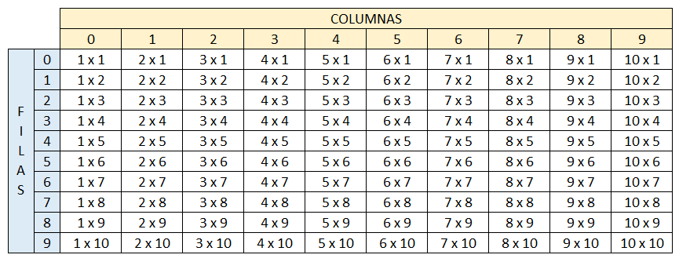

Se debe de imprimir el siguiente cuadro
El usuario deberá insertar la fila y columna de la cual desea ver el resultado, el resultado de cada celda
debe estar previamente calculado en una matriz bidimensional la cual cada resultado obedecerá a la fila y
columna insertada por el usuario

CODIGO
Proceso ARREGLO_5
Definir fila, columna, num, opcion Como Entero;
Definir dato Como caracter;
Dimension dato[10,10];
dato[0,0] <- "1 x 1= 1 ";
dato[0,1] <- "2 x 1= 2 ";
dato[0,2] <- "3 x 1= 3 ";
dato[0,3] <- "4 x 1= 4 ";
dato[0,4] <- "5 x 1= 5 ";
dato[0,5] <- "6 x 1= 6 ";
dato[0,6] <- "7 x 1= 7 ";
dato[0,7] <- "8 x 1= 8 ";
dato[0,8] <- "9 x 1= 9 ";
dato[0,9] <- "10 x 1= 10";
dato[1,0] <- "1 x 2= 2 ";
dato[1,1] <- "2 x 2= 4 ";
dato[1,2] <- "3 x 2= 6 ";
dato[1,3] <- "4 x 2= 8 ";
dato[1,4] <- "5 x 2= 10 ";
dato[1,5] <- "6 x 2= 12 ";
dato[1,6] <- "7 x 2= 14 ";
dato[1,7] <- "8 x 2= 16 ";
dato[1,8] <- "9 x 2= 18 ";
dato[1,9] <- "10 x 2= 20";
dato[2,0] <- "1 x 3= 3 ";
dato[2,1] <- "2 x 3= 6 ";
dato[2,2] <- "3 x 3= 9 ";
dato[2,3] <- "4 x 3= 12 ";
dato[2,4] <- "5 x 3= 15 ";
dato[2,5] <- "6 x 3= 18 ";
dato[2,6] <- "7 x 3= 21 ";
dato[2,7] <- "8 x 3= 24 ";
dato[2,8] <- "9 x 3= 27 ";
dato[2,9] <- "10 x 3= 30";
dato[3,0] <- "1 x 4= 4 ";
dato[3,1] <- "2 x 4= 8 ";
dato[3,2] <- "3 x 4= 12 ";
dato[3,3] <- "4 x 4= 16 ";
dato[3,4] <- "5 x 4= 20 ";
dato[3,5] <- "6 x 4= 24 ";
dato[3,6] <- "7 x 4= 28 ";
dato[3,7] <- "8 x 4= 32 ";
dato[3,8] <- "9 x 4= 36 ";
dato[3,9] <- "10 x 4= 40";
dato[4,0] <- "1 x 5= 5 ";
dato[4,1] <- "2 x 5= 10 ";
dato[4,2] <- "3 x 5= 15 ";
dato[4,3] <- "4 x 5= 20 ";
dato[4,4] <- "5 x 5= 25 ";
dato[4,5] <- "6 x 5= 30 ";
dato[4,6] <- "7 x 5= 35 ";
dato[4,7] <- "8 x 5= 40 ";
dato[4,8] <- "9 x 5= 45 ";
dato[4,9] <- "10 x 5= 50";
dato[5,0] <- "1 x 6= 6 ";
dato[5,1] <- "2 x 6= 12 ";
dato[5,2] <- "3 x 6= 18 ";
dato[5,3] <- "4 x 6= 24 ";
dato[5,4] <- "5 x 6= 30 ";
dato[5,5] <- "6 x 6= 36 ";
dato[5,6] <- "7 x 6= 42 ";
dato[5,7] <- "8 x 6= 48 ";
dato[5,8] <- "9 x 6= 54 ";
dato[5,9] <- "10 x 6= 60";
dato[6,0] <- "1 x 7= 7 ";
dato[6,1] <- "2 x 7= 14 ";
dato[6,2] <- "3 x 7= 21 ";
dato[6,3] <- "4 x 7= 28 ";
dato[6,4] <- "5 x 7= 35 ";
dato[6,5] <- "6 x 7= 42 ";
dato[6,6] <- "7 x 7= 49 ";
dato[6,7] <- "8 x 7= 56 ";
dato[6,8] <- "9 x 7= 63 ";
dato[6,9] <- "10 x 7= 70";
dato[7,0] <- "1 x 8= 8 ";
dato[7,1] <- "2 x 8= 16 ";
dato[7,2] <- "3 x 8= 24 ";
dato[7,3] <- "4 x 8= 32 ";
dato[7,4] <- "5 x 8= 40 ";
dato[7,5] <- "6 x 8= 48 ";
dato[7,6] <- "7 x 8= 56 ";
dato[7,7] <- "8 x 8= 64 ";
dato[7,8] <- "9 x 8= 72 ";
dato[7,9] <- "10 x 8= 80";
dato[8,0] <- "1 x 9= 9 ";
dato[8,1] <- "2 x 9= 18 ";
dato[8,2] <- "3 x 9= 27 ";
dato[8,3] <- "4 x 9= 36 ";
dato[8,4] <- "5 x 9= 45 ";
dato[8,5] <- "6 x 9= 54 ";
dato[8,6] <- "7 x 9= 63 ";
dato[8,7] <- "8 x 9= 72 ";
dato[8,8] <- "9 x 9= 81 ";
dato[8,9] <- "10 x 9= 90";
dato[9,0] <- "1 x10= 10 ";
dato[9,1] <- "2 x10= 20 ";
dato[9,2] <- "3 x10= 30 ";
dato[9,3] <- "4 x10= 40 ";
dato[9,4] <- "5 x10= 50 ";
dato[9,5] <- "6 x10= 60 ";
dato[9,6] <- "7 x10= 70 ";
dato[9,7] <- "8 x10= 80 ";
dato[9,8] <- "9 x10= 90 ";
dato[9,9] <- "10 x10= 100";
para fila <- 0 Hasta 9 Con Paso 1 hacer
para columna <- 0 hasta 9 con paso 1 Hacer
Escribir dato[fila,columna]," " Sin Saltar;
FinPara
Escribir " ";
FinPara
FinProceso